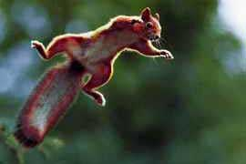

dwin cast Legend Lore on the second segment of the Staff of Law, which Katriana elected to carry.
dwin cast Legend Lore on the second segment of the Staff of Law, which Katriana elected to carry.
The one who feels the effects of this segment shall feel as if his limbs are encased in sand, and any actions seem to take valiant effort. This can be done once per cycle of the Sun, but only with the word COELUM on the wielder's lips.
The humans and bugbears were still in the chamber where the party had left them, though the enchantments had been broken with the death of the Aboleth. The party collected the former slaves and headed for the surface.
The entire group returned to the colony of gnomes at the topmost level of the cave complex. Though the party had been gone only three days the entire colony of gnomes and the horses the party had left in their care were severely malnourished and emaciated. Mazel, the leader of the colony, said that they had been unable to grow sufficient food since founding the colony a few weeks prior. Edwin and Katriana shook off the effect first: this was another incursion of chaos. The colony had been flourishing when the party left, with bountiful food. Katriana gave the gnomes some Goodberries, which were greatly appreciated.
Clearly the gnomes could not stay where there was no food. The humans could not stay underground, and the bugbears were already becoming restless. Katriana cast Commune with Nature, learning that the plant life within a 5 mile radius of the cave complex had been transformed into paltry scrub. A sharp dividing line at the five mile point separated this region from the original lush plant life. Katriana located another cave complex a bit over five miles away, where food would be plentiful. The party agreed to escort the gnomes and humans to the new location; the bugbears simply wandered off at their first opportunity, eager to forget the entire experience.
Edwin
Immediately after we left the cave complex, a planar rift formed about 30 feet above the ground. From the purplish hue I'd speculate it was a gateway to the Outlands though I'd need readings from a planar compass to be sure, or possibly samples of ectoplasm from the two new arrivals which I could alchemically preserve and analyze. When ectoplasm is burned in the presence of powdered crystal it imparts its resonant frequency to the flame. By measuring the rate of oscillation one can get a first order approximation of its plane or origin... or we could ask the two of them, I suppose.
The Narrator
Two beings emerged from the rift, thirty feet above the ground. One of the two new arrivals was Kaerick, who quickly cast Feather Fall. The second was Tarkan Syneshen, a friend of Seremak. Syneshen is a gnomish Changramai monk, based in Sigil. Syn confirmed that Seremak had successfully returned the Soul Gem to its extradimensional prison, but Chaos had not weakened. The monks of his order were very concerned, and had sent him to investigate.
"We're a gnome-heavy party." --Katriana
Concentrating on locating the third segment, Katriana felt a tug to the southwest. The party determined to head for Grabford, a city in Furyondy. Furyondy is a country controlled by paladins; the party vowed to be on best behavior. Edwin cast Regal Procession to conjure a team of horses for the weakened humans and gnomes to ride. The first three miles of the journey were uneventful, until the group arrived at the same clearing where the party had camped the final night before entering the cave complex (and where they had been ambushed by Wolf-Spiders). At that time it had been a beautiful glade. Now it was just a desolate, scraggly clearing.
 Suddenly a purplish brown ball plummeted from the barren trees, straight at Katriana's head. It unfurled as it fell, resembling a scabrous, mangy rodent 18 inches tall and nearly four feet from nose to tail. It had long claws, two tentacles sprouting from its shoulders, and patches of mangy brown fur. It attacked.
Grapthar
[Editor's note: Grapthar does not speak with the Scottish accent attributed to dwarves in a previous campaign and in OOTS. Nonetheless this Chronicler finds it entertaining to write it as such.]
Aye, th' bloody mutant squirr'ls be chafin' me ars'. Nasty buggers, but not too tough. Th' tent'cles pokin' out o' thar backs dinnae work verra well, just spasm'd and jerk'd aboot. Thar breath stank like an eld bog, too.
The Narrator
The battle was over quickly. Katriana believed the creatures had been a family of squirrels she had befriended when they had camped in this glade, now twisted and warped by the incursion of Chaos. [Editor's note: this Chronicler, failing to recognize foreshadowing, did not document the squirrels in the previous chronicle. Nonetheless they were present, and at that time were cute and cuddly]
At the five mile point over a span of about 100 feet the land transformed from blasted wasteland to lush, verdant forest. The group reached the cave complex and set up camp. Nothing untoward happened during the night, and Edwin was able to distill the various poisons harvested from phase spider, violet fungi and chuul carcasses.
The next morning, with the gnomes and humans ensconced in their new settlement, Katriana double-checked the direction of the third segment. The town of Grabford was in roughly the right direction, so the adventurers set out. Several patrols of mounted knights were encountered along the way. Chaden borrowed the first segment of the wand from Edwin, so as to appear more Lawful for benefit of the patrols. The party stayed in Grabford at the Bloated Badger Inn for two days, stocking up on supplies and equipment and acquiring the raw materials for Edwin to enchant several more magic items. Edwin made a Wilding Clasp for Katriana whilst in Grabford.
"The townspeople have never seen a gnome before. --The GM
Well DRINK IT ALL IN, BABY! -- Edwin" Various party members also availed themselves of Skywhite's House of Lavation (a bathhouse) whilst there.
Round 1
Owing to the darkness it was not clear how many opponents the party faced. Syneshan invoked Dancing Lights (a gnomish innate spell) to attempt to counter the Darkness, but it did not work. He ran out of the darkness and all the way across the bridge to try to find Kaerick, who had succumbed to the Fear spell and become trapped in webs while trying to flee.
Katriana cast Daylight, dispelling the Darkness. There were two wolf-spiders, one at each end of the bridge. Katriana heard a beautiful voice in her mind: "Give us the segment, and we will go." Katriana found those terms unacceptable. Grapthar stood up from where the panicked horse had thrown him and invoked Censure Demons (a class feature of Knight of the Chalice), stunning the wolf-spider threatening Kaerick. Edwin took out the second demon with a Sound Lance through its torso.
Grapthar, Kaerick, Syneshen, and Sabrina all had to make Will saves. All four took minor damage, and Grapthar, Syneshen, and Kaerick were sickened. The party later determined this was an Unholy Blight.
Another wolf-spider came barreling around the corner at the eastern end of the span. A fourth spider attempted to teleport in on the west side of the bridge, but Edwin had made it a habit to cast Anticipate Teleportation each morning. The spell delayed the wolf-spider's arrival by one round, and Edwin knew exactly where it would appear.
Round 2
Syneshen tore his way through the webs to the spider threatening Kaerick, which had been stunned by Grapthar's Censure Demons. Hitting with all five flurry of blows attacks, Syn killed it immediately.
Katriana cast Flame Strike, engulfing the two wolf-spiders to the east and (incidentally) one of the paniced horses. The horse perished instantly, but the demons were only affected by the divine portion of the damage (the spell is half fire and half divine). One of the wolf-spiders rushed up to bite Katriana. It inflicted minor damage and injected poison, but as a high-level Druid she is immune to poisons both magical and mundane.
Chaden put one of her new abilities to use: she tumbled past a wolf-spider on the eastern end of the bridge, rendering it flat-footed. She then sneak attacked with her greatsword. Added to the damage from the Flame Strike, the sneak attack killed the demon.
Grapthar used his flaming battleaxe to set the western web ablaze. This inflicted minor damage on Kaerick and Syn, but freed them. Kaerick, Syn, Grapthar, and Sabrina were then affected by another Unholy Blight for more damage.
The fifth wolf-spider, delayed by Edwin's Anticipate Teleportation, finally appeared. Edwin blasted it with Sound Lance before it had fully materialized, killing it instantly. Immediately after, Edwin thought he heard something moving on top of the covered bridge.
Round 3
With Kaerick now free, Syn ran back across the bridge to kill the second wolf-spider wounded by Katriana's Flame Strike. Kaerick promptly ran away due to the Fear effect, but Grapthar cast Remove Fear before she got too far. Katriana chased after Sabrina, also affected by Fear (and much, much faster than Kaerick). Katriana managed to calm Sabrina somewhat, though she continued running away.
Edwin cast Dimension Door to transport himself, Syneshen, and Chaden up to the roof of the covered bridge, where another Demon hid.
Round 4
The demonic poison was very strong, Edwin lost 6 points of strength immediately. As he had only 8 to start with, things looked grim. Syneshen clambered up the demon's torso to touch Edwin, using Abundant Step to whisk them both away. Edwin immediately drank a potion of Neutralize Poison.
Hearing the commotion, Katriana stopped chasing Sabrina and cast Summon Nature's Ally to conjure a Girallon atop the bridge. The Girallon could not hit the demon either: its damage reduction is stronger, and can only be affected by +2 weapons. It did distract the demon though, allowing Chaden to hit it with Orb of Sound and then backflip off the bridge where she grabbed the windowsill and dangled just above the water.
Grapthar
Aye, th' bloody demon spid'rs be chafin' me ars'. I dinnae know what 'twas,
but I felt a wee mite wheesy. I felt like I cannae keep me haggis' in me belly.
The bloody demon must've broken wind. It were an abyssal fart, fer certain.
Grapthar cast Airwalk to get to the top of the bridge, and Kaerick plunked two arrows into the demon. The arrows had stronger enchantments, which could get through its damage reduction. The demon invoked another powerful Unholy Blight, damaging the entire party and sickening Grapthar for 3 rounds.
Round 5
As most of the adventurers possessed ranged weapons with powerful enchantments, a barrage of missile fire commenced. Kaerick scored two hits with arrows (one critical) and Syn hit with a shuriken. Katriana conjured another Flame Strike, though as before only the divine portion of the damage had any effect; the wolf-spiders appeared to be immune to fire. The Girallon Katriana had summoned attempted to grapple with the demon but was struck and poisoned.
Chaden, hanging from the windowsill over the water, put away her sword and climbed back up onto the roof. Grapthar walked up the Airwalk path towards the demon. He attempted to strike it with his battleaxe but owing to the nausea from the Unholy Blight, he missed. Edwin hit the demon with another Sound Lance, which had killed the lesser wolf-spiders outright but merely wounded this one. Kaerick, newly freed from the Fear effect, attempted to Hold Monster but the demon was unaffected.
The demon invoked another powerful Fear effect, focussed on Grapthar. As a Knight of the Chalice, Grapthar is completely immune to fear from evil outsiders.
Round 6
Katriana wildshaped into an Eagle and cast Bull's Strength (Mass) on the entire party, but it proved unnecessary: Chaden's next arrow killed the foe.